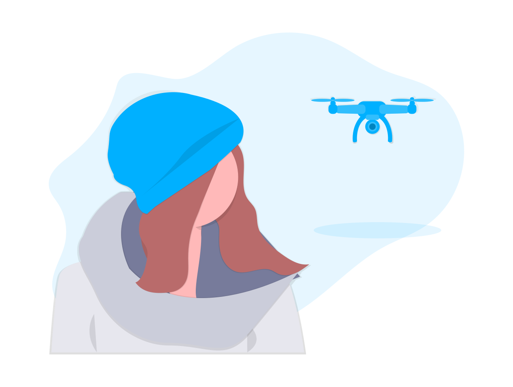

Comunidad de Drones
Comunidad de Drones

Actualmente podemos encontrar muchos cursos de drones en Colombia que ofrecen un certificado como piloto profesional de naves no tripuladas o tripuladas a distancia. Sin embargo, ¿sabes cuáles son las escuelas autorizadas por la Aerocivil para ofrecer estos conocimientos?
En este artículo encontrarás los centros avalados con clases presenciales, semipresenciales o completamente virtuales en los cuales obtendrás conocimientos prácticos y teóricos de la industria de drones y, en algunos cursos, también incluyen módulos donde podrás aprender a repararlo tu mismo.
Al culminar el curso, los estudiantes obtienen una certificación como operadores de drones UAS que avala sus habilidades para trabajar con drones en actividades audiovisuales, agrícolas, topográficas, vigilancia, telecomunicaciones, geolocalización, entre otras. Así mismo, contar con una licencia para volar drones profesionalmente es un requisito que exige la Aeronáutica Civil colombiana para tramitar el registro como explotador de drones Clase B.
Esta es la lista de academias avaladas por la Aerocivil para convertirte en piloto profesional de drones:
¿Conoces alguna otra academia o escuela avalada por la Aeronáutica Civil en Colombia para obtener tu certificado profesional de drones que podamos agregar?